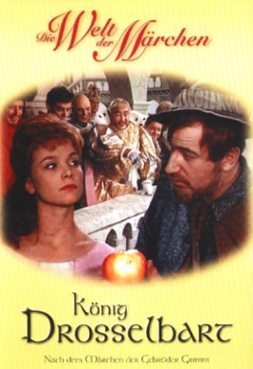

#11223 König Drosselbart
 
 IMDB-Wertung: 6.7 / 10
IMDB-Wertung: 6.7 / 10  Metascore: 0
Metascore: 0 
Jahr: 1965
Dauer: 69 Minuten
FSK:
Land: Ost-Deutschland Studio: Icestorm EntertainmentTonspuren:
Untertitel:
Auflösung: 1080p (1440x1080) Größe: 4474 MB
Genre: Fantasy
Regisseur: Walter Beck
Drehbuch: Jacob Grimm, Wilhelm Grimm, Günter Kaltofen, Walter Beck
Soundtrack: Wolfgang Lesser
Darsteller:
- Karin Ugowski als Prinzessin Roswitha
- Manfred Krug als König Drosselbart
- Marianne Wünscher als Obsthändlerin
- Jutta Wachowiak als Zuckerbäckerin
- Martin Flörchinger als König Löwenzahn
- Evamaria Heyse als Hofdame Beatrix
- Helmut Schreiber als König Heinz Eduard
- Gerd E. Schäfer als Herzog Adolar
- Arno Wyzniewski als Prinz Kasimir
- Bruno Carstens als Fürst Zacharias
- Fritz Decho als Graf Eitelfritz
- Achim Schmidtchen als König Wenzel
- Horst Buder als Junker Balduin
- Klaus Piontek als Tanzmeister
- Manfred Heine als Küchenmeister
- Nico Turoff als Kutscher Sebastian
- Ulrich Balko als Küchenjunge
- Trude Brentina als Altes Mütterchen
- Ostara Körner als Frau auf dem Markt
- Gundula Kahlow als Zofe
- Jochen Bley als Knabe Wilhelm (uncredited)
- Jochen Diestelmann als Haushofmeister (uncredited)
- Lothar Förster als Haushofmeister (uncredited)
- Rosemarie Gehrmann als Tänzerin (uncredited)
- Werner Kamenik als Tagelöhner Nadler (uncredited)
- Angelica Malluschke als Friseuse (uncredited)
- Jürgen Marten als Mann (uncredited)
- Renate Catharina Schroff als Bürgersfrau (uncredited)
- Klaus Schwarz als Diener (uncredited)
- Renate Thiede als Arbeiterfrau (uncredited)
- Axel Triebel als Bürger Spiegler (uncredited)
- Christian Weisbrod als Schneider (uncredited)
Datei: X:\Märchen\König Drosselbart (1965, FSK, 1440x1080).mkv seit 20.05.2019
Festplatte: Kinder-Filme+Trick
 Es gibt insgesamt 61 Filme in der Gruppe 'Märchen'
Es gibt insgesamt 61 Filme in der Gruppe 'Märchen'